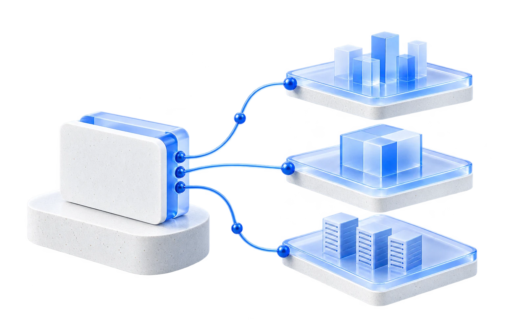

Infrastructure platform
AgileCloud
Your infrastructure, simply under control.
An intelligent control plane to deploy, manage, observe, secure and automate cloud infrastructure, Kubernetes, servers and private datacenters. Your infrastructure remains yours.
DeploymentEnvironments ready with confidence.ObservabilityA clear view of your systems.GovernanceStandards for durable operations.
BYOIKubernetesPrivate CloudSecurityBackupFinOpsAI Operations

AgileCloud
ApplicationsYour business applications
PlatformManaged services and tools
InfrastructureCloud, networks and security